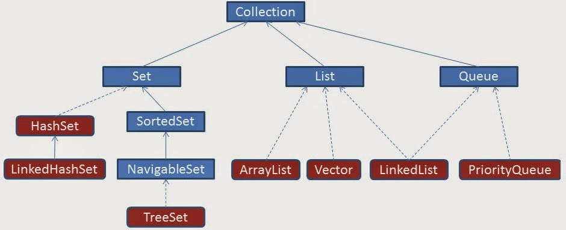

Java Collections:
Java Collection internally uses the primitive and core elements like Arrays etc. So if you are asked a question to explain the internal working of any of the Collection classes, don't be surprised. Be it an interview for an Junior Java developer or even for an Architect, Java Collection is always something that you will have on you plate.
Java provides many collection classes that can be used to store data. Knowing which collection class to use for best performance and optimum result is the key.
First the basics.
Below two image shows the complete hierarchy of interfaces and classes present in the Collection framework.

The Collections come in basic four flavours:
Lists : List of things ( Classes that implement List Interface)
Sets : Unique things ( Classes that implement Set Interface)
Maps : Things with unique id ( Classes that implement Map Interface)
Queues : Things arranged in order ( Classes that implement QueueInterface)
The blue ones are the Interfaces and the red ones are the implementation classes
Below table shows the different concrete classes implementing these interfaces
| Maps | Sets | Lists | Queues | Utilities |
|
|
|
|
|
List
List interface promises that the elements maintain the order in which they are added. That means it is a ordered Collection. List implementations do not sort the elements.
Lets see each implementation of List
ArrayList
Ordered
Object[] elementData;
When we do List l = new ArrayList(); the array elementData is initialised with a size of 10
add(E element)
When a new element is added the capacity of the array elementData is checked and if it is completely filled that is all element 10 are filled a new array is created with a new capacity by using Arrays.copyOf. If the elementData array is not exhausted the new element is added in the array.
So adding a element in a array may take more time as a completely new array needs to be created with greater capacity and the data in the old array is transferred into the new array.
add(index i, E element)
On adding a element at a particular index in ArrayList, ArrayList checks if a element is already present at that index. If no than the element passed in add() is added at that index, otherwise a new array is created with the index kept vacant and the remaining element shifted to right.
For Eg:
List
l.add(1);
l.add(2);
l.add(1,3);
l.add(4);
for(int i:l){
System.out.println(i);
}
Output
1
3
2
4
Here above we are trying to add 3 and position 1, since position 1 already has value '2'. A new array is created with value at index 1 kept vacant and the remaining elements are shifted to right. Than the element 3 is added at index 1.
get(int index)
The element present at that index in that array is returned. This is very fast.
When to use ArrayList
When the requirement is fetch data frequently and adding data is one time activity.
When not to use ArrayList
When the list is updated frequently
To understand ArrayList in more detail follow link Custom Array List. Here a custom Arraylist is created with basic add and get operations
Basic Data Structure which is used in an ArrayList is -
private transient Object[]elementData;
So, going by declaration it's an array of Object.
When we actually create an arrayList following piece of code is executed -
this.elementData=new Object[initial capacity];
ArrayList can be created in two ways-
1. List
When we create an ArrayList in this way, default constructor is invoked and will internally create an array of Object with default size, which is 10.
2. List
When we create an ArrayList in this way, constructor with an integer argument is invoked and will internally create an array of Object with the size, specified in the constructor argument, which happens to be 5 in this case.
Now, As we all know that unlike normal arrays, the size of the ArrayList grows dynamically. But how its size grows internally?
Inside .add() method there is this check. So,before adding element into the array it will check what is the current size of filled elements and what is the maximum size of the array. If size of filled elements is greater than maximum size of the array then size of the array must be increased. But we know that the size of the array cannot be increased dynamically.
So what happens internally is a new Array is created with size 1.5*currentSize and the data from old Array is copied into this new Array.
Linked List
Ordered
As opposed to ArrayList LinkedList does not store elements in a array. Linked List is a actually a collection ob objects linked together using a reference.
For more details about the Data structure of Singly Link List and Doubly Linked List refer this link Double Link List
With the Node called as Entry class having structure as
class Entry {
E element;
Entry next;
Entry previous;
}
LinkedList class also has a instance variable of type 'Entry' called 'header'. This is the 'start' element or node of the list.
add(E element )
Every Time we call add(var); a new instance of 'Entry' class is created and attached at the end of the list.
add(var, position)
Inserts the specified element at the specified position in this list.
Shifts the element currently at that position (if any) and any subsequent elements to the right.
get(int index)
It iterates through the list and returns the element. This is very expensive and time consuming as opposed to ArraList.get(int index)
When to use LinkedList
When the elements are getting added and removed frequently.
When not to use LinkedList
When you want to access or fetch a element by index.
Map
As we saw above, the List allows us to add values in it. But to find that value you need to traverse through the complete list. Map is a special collection provided by Java. It helps to find a added element easily.
Instead of just adding the value or element in a collection, Map allows you to add to elements. One called as key and the other as value.
Consider the key as employee id and the value as the employee object.
Lets see different implementations of Map.
HashMap
HashMap works on the principal of hashing. It stores values in the form of key,value pair and to access a value you need to provide the key.
For efficient use of HashMap the 'key' element should implement equals() and hashcode() method. equals() method define that two objects are meaningfully equal. hashcode() helps HashMap to arrange elements separately in a bucket. So elements with same hascode are kept in the same bucket together.
So when we want to fetch a element using get(K key), HashMap first identifies the bucket in which all elements of the same hascode as the hashcode of the 'key' passed are present. Than it uses the equals() method to identify the actual object present in the bucket.
Lets see how HashMap implements this logic internally.
For fast access to a value HashMap places a element (both key and value) in a SinglyLinkedList(Bucket). All the elements that have the same hascode are placed in the same SinglyLinkedList. The number of SinglyLinkedList(buckets) depends upon how many objects are present with different hashcode. To hold these buckets together a array is used. The size of the array is initially defined to 12. And it changes as new elements with different hascodes are added. Lets see the pictorial view.
The structure of the 'Entry' class used above.
class Entry {
K key;
V value;
Entry next;
int hash;
}
HashMap also has some more variables which define the initial size of the array.
DEFAULT_LOAD_FACTOR = 0.75f;
DEFAULT_INITIAL_CAPACITY = 16;
Entry[] table = new Entry[DEFAULT_INITIAL_CAPACITY];
What is bucket ?
A bucket is used to store key value pairs . A bucket can have multiple key-value pairs . In hash map, bucket used simple linked list to store objects .
Code inside Java Api (HashMap class internal implementation) for HashMap get(Obejct key) method
1. Public V get(Object key)
{
2. if (key ==null)
3. //Some code
4. int hash = hash(key.hashCode());
5. // if key found in hash table then return value
6. // else return null
}
Hash map works on the principle of hashing
HashMap get(Key k) method calls hashCode method on the key object and applies returned hashValue to its own static hash function to find a bucket location(backing array) where keys and values are stored in form of a nested class called Entry (Map.Entry) . So you have concluded that from the previous line that Both key and value is stored in the bucket as a form of Entry object . So thinking that Only value is stored in the bucket is not correct and will not give a good impression on the interviewer .
* Whenever we call get( Key k ) method on the HashMap object . First it checks that whether key is null or not . Note that there can only be one null key in HashMap .
If key is null , then Null keys always map to hash 0, thus index 0.
If key is not null then , it will call hashfunction on the key object , see line 4 in above method i.e. key.hashCode() ,so after key.hashCode() returns hashValue , line 4 looks like
int hash = hash(hashValue)
, and now ,it applies returned hashValue into its own hashing function .
We might wonder why we are calculating the hashvalue again using hash(hashValue). Answer is ,It defends against poor quality hash functions.
Now step 4 final hashvalue is used to find the bucket location at which the Entry object is stored . Entry object stores in the bucket like this (hash,key,value,bucketindex) .
Interviewer: What if when two different keys have the same hashcode ?
Solution, equals() method comes to rescue.Here candidate gets puzzled. Since bucket is one and we have two objects with the same hashcode .Candidate usually forgets that bucket is a simple linked list.
The bucket is the linked list effectively . Its not a LinkedList as in a java.util.LinkedList - It's a separate (simpler) implementation just for the map .
So we traverse through linked list , comparing keys in each entries using keys.equals() until it return true. Then the corresponding entry object Value is returned .

One of our readers Jammy asked a very good question
When the functions 'equals' traverses through the linked list does it traverses from start to end one by one...in other words brute method. Or the linked list is sorted based on key and then it traverses?
Answer is when an element is added/retrieved, same procedure follows:
a. Using key.hashCode() [ see above step 4],determine initial hashvalue for the key
b. Pass intial hashvalue as hashValue in hash(hashValue) function, to calculate the final hashvalue.
c. Final hash value is then passed as a first parameter in the indexFor(int ,int )method .
The second parameter is length which is a constant in HashMap Java Api , represented by DEFAULT_INITIAL_CAPACITY
The default value of DEFAULT_INITIAL_CAPACITY is 16 in HashMap Java Api .
indexFor(int,int) method returns the first entry in the appropriate bucket. The linked list in the bucket is then iterated over - (the end is found and the element is added or the key is matched and the value is returned )
Explanation about indexFor(int,int) is below :
/**
* Returns index for hash code h.
*/
static int indexFor(int h, int length) {
return h & (length-1);
}
The above function indexFor() works because Java HashMaps always have a capacity, i.e. number of buckets, as a power of 2.
Let's work with a capacity of 256,which is 0x100, but it could work with any power of 2. Subtracting 1
from a power of 2 yields the exact bit mask needed to bitwise-and with the hash to get the proper bucket index, of range 0 to length - 1.
256 - 1 = 255
0x100 - 0x1 = 0xFF
E.g. a hash of 257 (0x101) gets bitwise-anded with 0xFF to yield a bucket number of 1.
TreeMap
Sorted
TreeMap is a structure which is designed to work as a Red - Black - Tree. Here each node has only two child nodes and the insertion is a tree happens same as the insertion strategy of Binary Search Tree explained here. So the elements in a TreeMap are always sorted.
The elements added is a TreeMap should implement comparable and provide implementation of compareTo method. On the basis of this TreeMap decides wether the node is smaller or greater than other node. If Comparable is not implemented, a class which is Comparator should be passed in the constructor of TreeMap. If both Comparable and Comparator are present TreeMap uses Comparator implementation.
In addition to the requirements imposed on a binary search tree the following must be satisfied by a red–black tree:[6]
TreeMap internally maintains a List of Nodes with each node being a Entry
The basic structure of this Entry class is
class Entry{
K key;
V value;
Entry left = null;
Entry right = null;
Entry parent;
boolean color = BLACK;
}
Entry
When we use put(K,V) method it checks if root is pointing anywhere if no it makes the instance of Entry
The constructor of Entry
For the next time we enter something using put(K,V) it first identifies the comparison mechanism to use. First it check the Comparator class is present or not . This class is passed when creating the instance of TreeMap. If not present it uses the Key's Comparable implementation.
It then traverse through root and compares each node with the node entered and depending upon the comparison places the node either left or right of the parent node.
Set
Set is a collection that can not contain duplicate values. So if we want to have a unique collection, Set is the obvious choice.
Set has three implementations HashSet, TreeSet and LinkedHashedSet.
Hashset
Non Duplicate
Un-Ordered
Hashset is a special case
HashSet internally uses HashMap. Yes thats true.
HashSet has a instance variable called 'map' which is a instance of HashMap.
add(E element)
When we add a value in Hashset, Hashset internally adds a value in 'map' by calling put(E,o);
where E that is the key is the element passed in add(E element) of HashSet and 'o' as the value which is a dummy Object creted by doing Object o = new Object; which is common for all key's entered in HashMap 'map'.
HashSet internally checks wether the Key that is 'element' is already present by calling the equals method of 'element'.
This method returns false if the Key is already present in HashMap.
How HashSet Works Internally In Java?
Whenever you insert an element into HashSet using add() method, it actually creates an entry in the internally backing HashMap object with element you have specified as it’s key and constant called “PRESENT” as it’s value. This “PRESENT” is defined in the HashSet class as below.
// Dummy value to associate with an Object in the backing Map
private static final Object PRESENT = new Object();
Let’s have a look at add() method of HashSet class.
public boolean add(E e)
{
return map.put(e, PRESENT)==null;
}
You can notice that, add() method of HashSet class internally calls put() method of backing HashMap object by passing the element you have specified as a key and constant “PRESENT” as it’s value.
remove() method also works in the same manner.
public boolean remove(Object o)
{
return map.remove(o)==PRESENT;
}
Let’s see one example of HashSet and how it maintains HashMap internally.
public class HashSetExample
{
public static void main(String[] args)
{
//Creating One HashSet object
HashSet<String> set = new HashSet<String>();
//Adding elements to HashSet
set.add("RED");
set.add("GREEN");
set.add("BLUE");
set.add("PINK");
//Removing "RED" from HashSet
set.remove("RED");
}
}
See the below picture how above program works internally. You can observe that internal HashMap object contains elements of HashSet as keys and constant “PRESENT” as their value.
TreeSet
Non Duplicate
Sorted
Like HashSet uses HashMap internally, TreeSet uses TreeMap internally. TreeSet ensures that elements added are not duplicate and they are sorted. Sorting is done using TreeMap.
add(E element)
When we add a value in TreeSet, TreeSet internally adds a value in 'map' by calling put(E,o);
where E that is the key is the element passed in add(E element) of TreeSetand 'o' as the value which is a dummy Object creted by doing Object o = new Object; which is common for all key's entered in TreeMap 'map'.
TreeSet internally checks wether the Key that is 'element' is already present by calling the equals method of 'element'.
This method returns false if the Key is already present in TreeMap.
LinkedHashSet
Non Duplicate
Ordered
LinkedHashSet extends HashSet that means it is a HashMap without duplicates. But the difference here with HashSet is that LinkedHashSet is ordered.
It uses a Doubly Linked List that runs through the Set holding the order together.